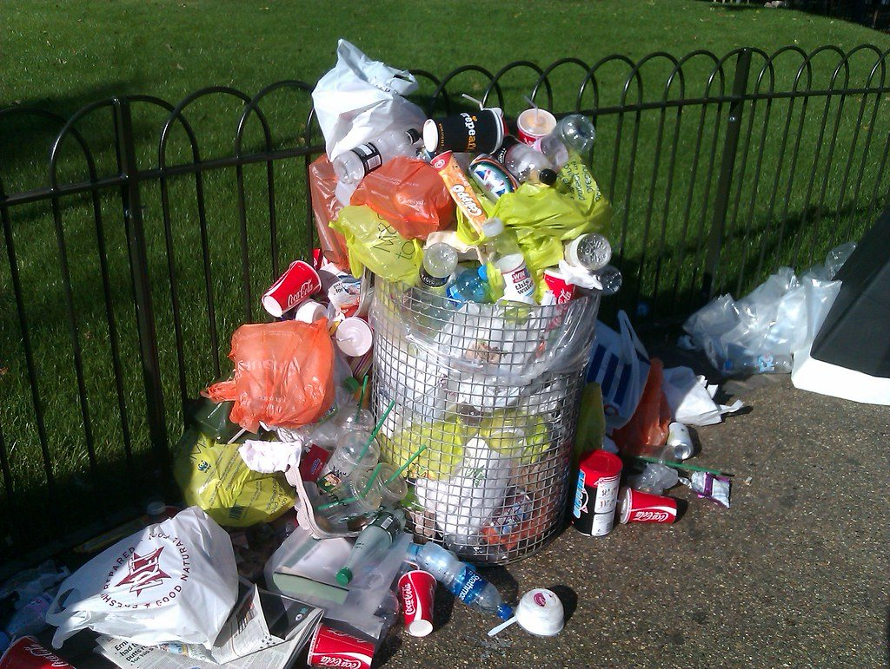
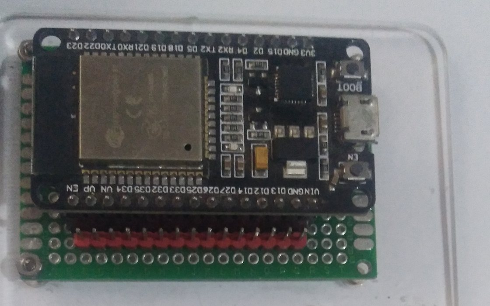
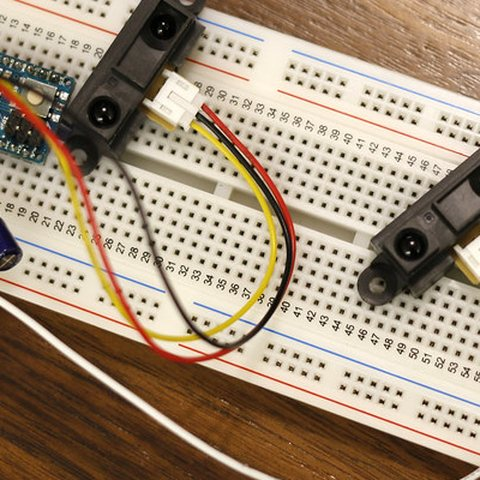
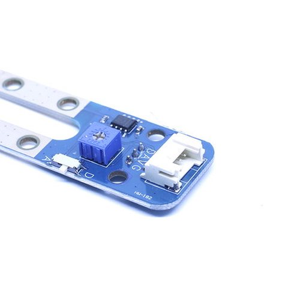
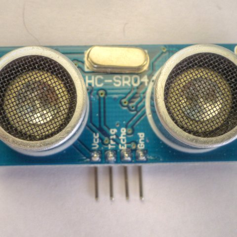
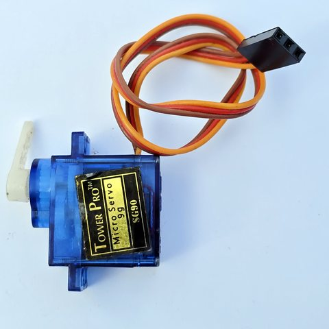
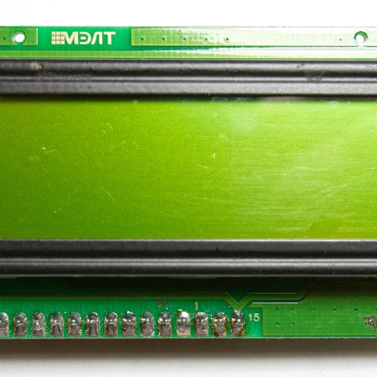
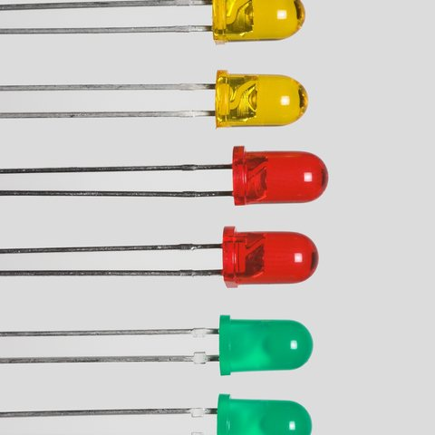
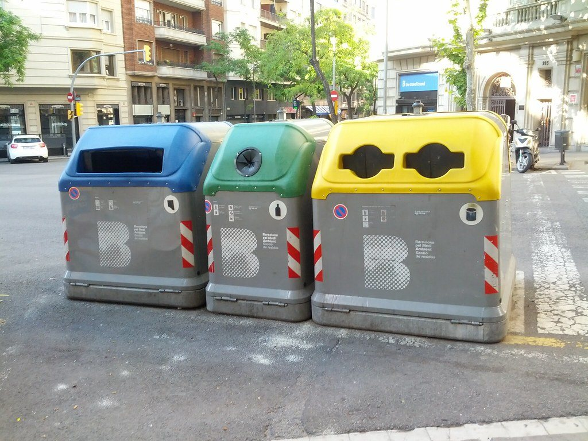

Pemilahan manual tidak konsisten
Banyak orang membuang sampah tanpa memperhatikan label organik/anorganik, sehingga proses daur ulang terhambat sejak dari sumbernya.
Smart Bin · Proyek IoT · D3 Teknik Informatika
Tempat sampah pintar yang memilah sampah organik dan anorganik secara otomatis, lalu memantau kapasitas tiap kompartemen secara real-time melalui ESP32 dan dashboard mobile.

Di lingkungan kampus dan masyarakat, pemilahan sampah masih bergantung pada kesadaran individu. Hasilnya: sampah organik dan anorganik tercampur, sulit diolah, dan tempat sampah sering penuh tanpa ada yang tahu.
Banyak orang membuang sampah tanpa memperhatikan label organik/anorganik, sehingga proses daur ulang terhambat sejak dari sumbernya.
Petugas kebersihan baru tahu tempat sampah penuh saat sudah meluap. Tidak ada informasi kapasitas secara real-time.
Tanpa data volume dan jenis sampah, sulit merencanakan jadwal pengangkutan maupun program bank sampah.
Sortir otomatis saat sampah masuk, kapasitas terpantau lewat sensor, dan semua data terekam di dashboard.
Empat langkah yang berjalan otomatis setiap kali ada sampah masuk ke alat.
Pengguna memasukkan sampah lewat lubang masuk di bagian atas alat.
Sensor IR mendeteksi ada sampah masuk, lalu sensor kelembaban menentukan jenisnya: lembab = organik, kering = anorganik.
Satu servo SG90 memiringkan platform: ke kiri untuk organik, ke kanan untuk anorganik, lalu kembali ke tengah.
Sensor ultrasonik mengukur ketinggian isi; ESP32 mengirim data ke dashboard via WiFi/MQTT.
Status juga tampil lokal di alat melalui LCD 16x2 dan LED hijau / kuning / merah. Setiap sampah berhasil dipilah, LCD menampilkan pesan "Terima kasih sudah tidak buang sampah sembarangan".
Fitur inti yang membedakan Smart Bin dari tempat sampah biasa.
Sampah langsung dipilah tanpa campur tangan pengguna. Servo memiringkan platform sesuai jenis sampah yang terdeteksi.
Ketinggian isi tiap kompartemen dibaca sensor ultrasonik dan ditampilkan sebagai persentase kapasitas.
Saat kapasitas melewati ambang batas (mis. 80%), LED merah menyala dan dashboard mengirim peringatan.
Pantau status, kontrol platform secara manual, dan lihat riwayat serta statistik, semua dari ponsel.
Seluruh rangkaian berbasis ESP32 dan sudah disimulasikan di Wokwi sebelum dirakit secara fisik.

Otak sistem: membaca sensor, mengendalikan servo, dan mengirim data ke dashboard lewat WiFi.

Pemicu: mendeteksi ada sampah masuk lewat lubang atas, lalu memulai proses pemilahan.

Menentukan jenis sampah: nilai lembab = organik, kering = anorganik.

Mengukur jarak ke permukaan sampah di tiap kompartemen untuk menghitung level kapasitas.

Memiringkan platform ke kiri (organik) atau ke kanan (anorganik).

Menampilkan status kapasitas, jenis sampah terakhir, dan pesan terima kasih di alat.

Hijau = normal, kuning = hampir penuh, merah = penuh. Terlihat dari jauh tanpa buka aplikasi.
smartbin/01/#
Model 3D casing Smart Bin: lubang masuk di atas, platform pemilah, dan dua laci kompartemen organik & anorganik. Putar dan perbesar untuk melihat detailnya.
Dikembangkan bertahap dari pemilah sederhana hingga sistem ekonomi sirkular yang terintegrasi.

Monitoring kapasitas, kontrol manual, riwayat, dan pengaturan, dalam satu aplikasi mobile.
Buka Dashboard